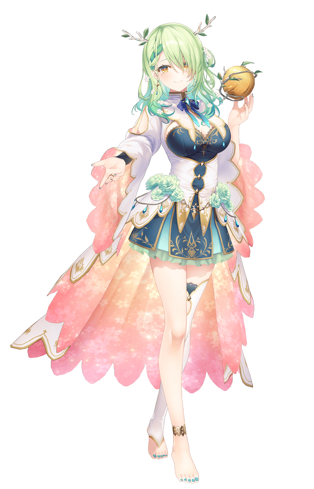

[Alum] Ceres Faunaワトソン・アメリア
“Konfauna~ Your gaming idol kirin Ceres Fauna is here!”
The Keeper of Nature, a druidic kirin who appeared on the internet to win over humans and convince them to return to nature.
She’ll attempt to charm you with her soft voice, comforting presence, and surprisingly deep knowledge of cursed memes, but be wary, because she has a reputation for turning people into trees.
Once you enter her forest, you won’t want to leave.